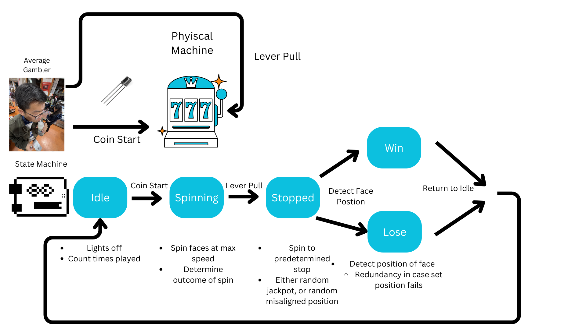

The firmware for our slot machine is extremely straightforward. For our servos, we rely on the built-in Servo library for control as well as an input digital pin to convert the signal from the built-in hall effect sensor to position information. Our remaining coin slot and lever is a simple input digital pin that is looking for a high signal.
To control the behavior of the slot machine during different states we used a basic slot machine with the following states and behaviors for each state:
Our control mechanisms are quite simple. Our lever is a simple switch with two metal contacts that trigger a state change when they touch.
Our coin slot is a simple IR sensor that triggers a state change when the light intensity changes due to a coin blocking it.
The servos that we used for this project are 4-wire servos that have an extra wire for a hall-effect encoder. To help reduce repetitive and messy code due to initializing and controlling three servos, we created a library called SlotWheel to handle some basic functionality. This library contains the following functions:
test()
Returns the current encoder value. Used to debug our library.
begin()
Initializes servo control using the Servo library and attaches the hall effect sensor to a digital pin.
read()
The hall effect sensor encodes position by modulating the period of a square wave. This function calculates the position by reading the period of the wave and mapping it from a value of 0 to 255.
write()
Sets the speed of the servo using the built-in write() function from the Servo class.
getSpeed()
Returns the current speed of the servo.
reset()
Rotates the servo until its position is zero.
runToPosition()
Rotates the servo to a specified position.
runToFace()
Rotates the servo to a specified face(assumes 5 faces).
getFace()
Gets the current face that the slot wheel is showing(assumes 5 faces).
After running all three slot wheels in unison, we found that runToPosition() did not adequately control the servos' position. This caused each servo to stop one after another. Something about the sequential stopping of each servo caused all of our servos to lose accuracy. To solve this problem, we implemented the fullSpin() function in our Arduino file. This function implements an individual P(ID) controller for each one of our slot wheels. By implementing the P(ID) ourselves, we can modulate the speed for all servos at the same time. This P(ID) controller only uses proportional to change the servo speed relative to the distance from the set point.
To determine the outcome of the slot machine, we converted the phrase “we ate too much pie” into binary. In this sequence, the ones represent jackpots and the zeros represent losses. Whenever the state machine is iterated through, we increase the index that we look at in this sequence.Despite this predetermined win, we don’t rely on this binary sequence to determine the wins and losses.
At the end of the stopped state, we check the physical position of all the faces to see if a jackpot really happened or not. This is to account for any number of things that could go wrong
Example of controlling faces reset the wheels using with reset()
This site was created with the Nicepage